Findings
The plots, grouped by the question they answer. Heights are metres above ground; s(t) is the height gradient. Every figure comes from a script in the team repository and can be regenerated.
Is there a height-dependent signal at all?
Yes, on 97 % of the passes, and most of it is the buildings. Fit a straight line of displacement against height across all points on one pass; the slope is s(t). It has a slow trend of −2.56 mm per 100 m per year, the north-east towers sinking faster than the ground, and a yearly wave of 5.26 mm per 100 m, the buildings expanding in summer. What changes from one pass to the next after those two are removed is 1.69 mm per 100 m, three times the noise of the fit and about 16 N-units of refractivity if it were all air. Any building motion that varies with height and is neither a trend nor a yearly wave would produce the same number.
That is why nothing here rests on one point. Inside a 10 m cell the points sit about 1.6 mm apart on a single pass, and their long-term rates differ by 0.6 mm per year, half a metre of spread in height being enough to change what a point does. The height-dependent part we are after is 1.69 mm per 100 m across the whole scene, smaller than the disagreement between neighbouring points, and it only appears in the mean of at least twenty of them. Every mean on this site is published with that spread beside it, and the animations and the 3D view will colour by it.
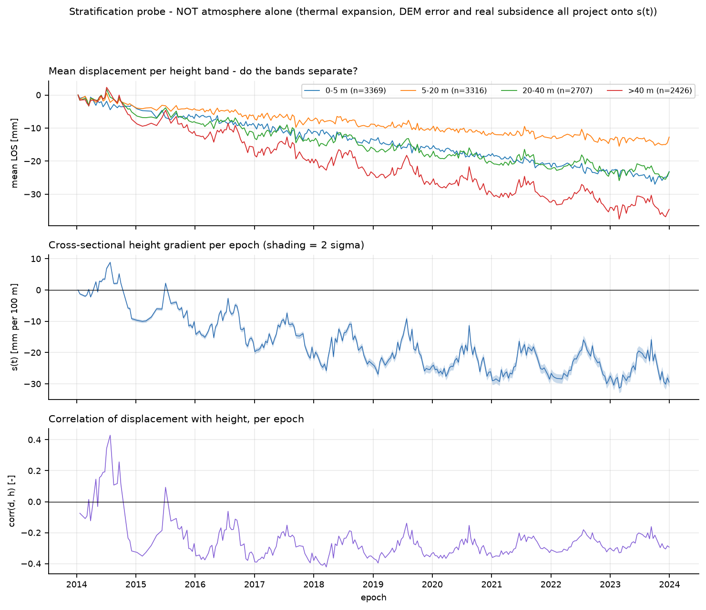
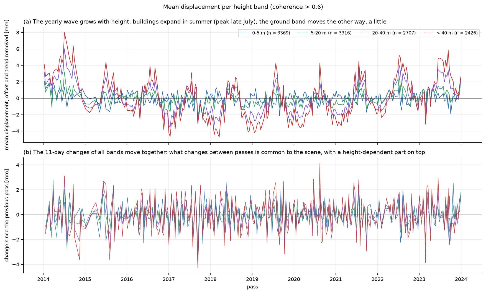
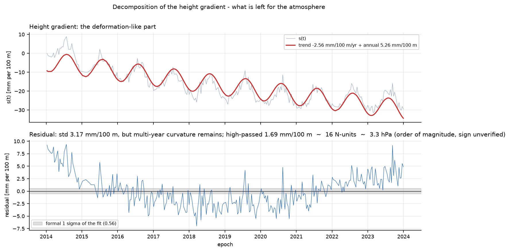
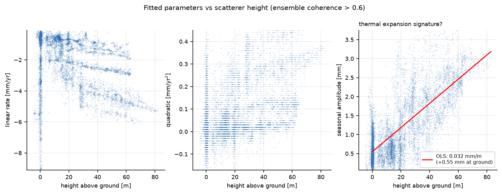
Is the fast signal scene-wide, and truly about height?
Both. Independent halves of the scene see the same pass-to-pass changes, whichever way the scene is cut, while the slow sinking sits in the north-east half only. And pairs of points a few tens of metres apart give almost the same gradient as the whole scene: 82 % of it at 16 m separation, rising to the full value at 250 m. A horizontal gradient is not masquerading as a vertical one.
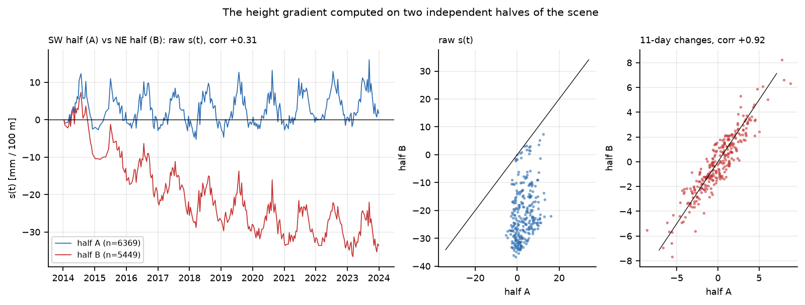
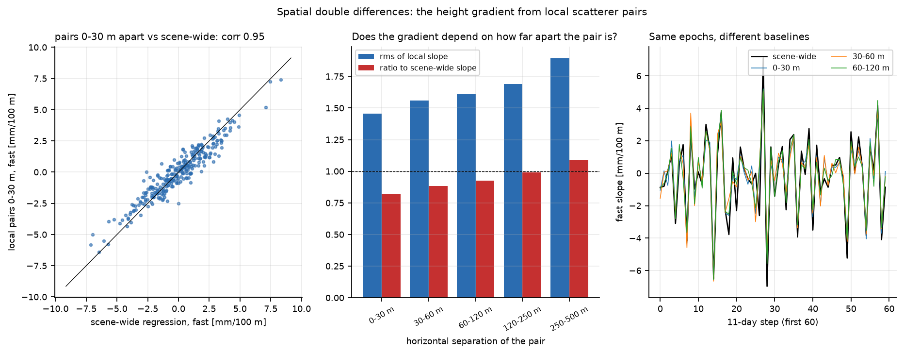
Buildings or air?
Both, and they can be told apart. Fit the 11-day changes of s(t) on two things at once: the change of a lagged air temperature, standing in for the temperature of the buildings, and the change of the lowest 100 m of refractivity above De Bilt. Temperature comes out at 0.62 ± 0.04 mm per 100 m per kelvin against 0.92 predicted; refractivity at 0.064 ± 0.006 against 0.109. The two are barely tangled, the buildings want a lag of about five days, and both fall short of physics by the same third. Why is open: buildings that are not free to expand, a balloon 50 km away, the unknown pass hour, or an atmospheric filter in the processing.
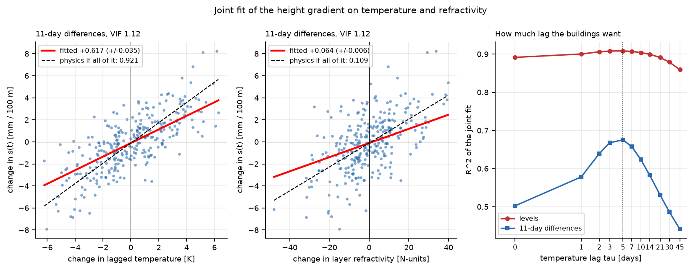
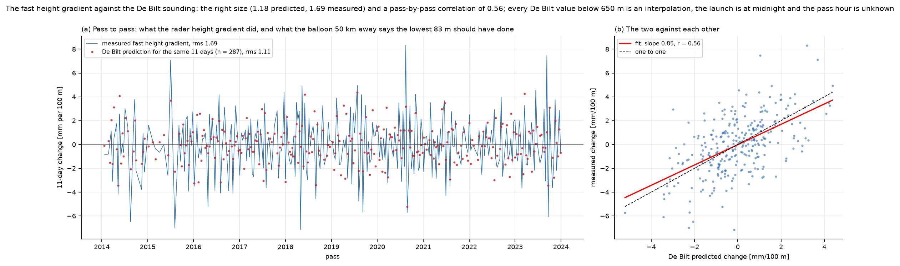
On the 49 pass days with both a midnight and a noon sounding, the noon one explains the radar no better. Time of day is not the gap between balloon and radar; distance probably is.
Towards a profile
Today the retrieval is one number per pass. Group the points into ten height bins and the 11-day changes fall on a straight line: a line explains 65 % of the binned variance, a parabola 78 %, and the departure from the line has a fixed shape, a kink around 20 to 30 m, the same on every pass. At this sensor's precision and this city's height range the product is a mean layer value. The balloon archive could not check a profile shape anyway: its first level is about 650 m up. The pressure part of the layer is predictable, −2.3 ± 0.4 N-units over 0 to 83 m; the humidity part is the signal, −1.2 ± 1.0.
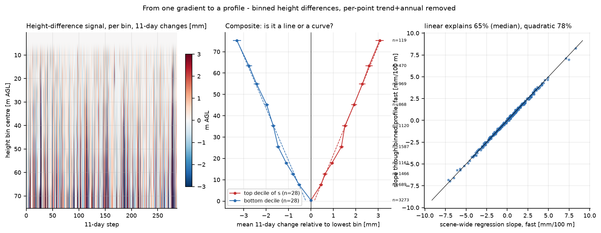
An independent check took a different route: the mean of the ground points minus the mean of the roof points, 58 m apart, against the wet delay computed from surface weather. After trend and season are removed the two agree with a regression slope of 1.08. The atmosphere is about 0.7 mm of the 3.0 mm yearly wave in that difference and the buildings about 2.1 mm, peaking eleven days apart, too close to separate by timing alone. The pass-to-pass band is where they separate.
The ground
One ground point moves with the seasons, peaking in winter, opposite to the buildings. Is that one point? No. All 3 369 ground points below 5 m were grouped by their distance to the nearest tall building. The open ground as a whole moves towards the satellite in winter and away in summer, by 0.5 to 0.8 mm, peaking in mid-February; the 1 500 points within 30 m of a tower show almost no cycle. Per point, 48 % peak between November and February and 30 % between May and September.
The cause is open, and three candidates remain. The reference point: every displacement is relative to one reflector, and if that sits on a building that expands in summer, every other point inherits the mirror image. Against it, the timing and the pattern do not fit. The near-surface refractivity cycle: the lowest 100 m above De Bilt are 11 N-units more refractive in August than in February, which gives a ground point 1.2 mm of seasonal delay per 100 m of height difference to the reference point, in exactly this phase. Real motion of the fill: the pier is fill over clay and peat, it sinks at 2.5 to 4 mm a year next to buildings that do not, and groundwater peaks in February. The ascending track would separate the first two from the third; the location and height of the reference point would settle most of it.
Which of the three is it? The spatial pattern argues hardest against the reference point, because a mirror image of one expanding building would be the same everywhere and this is not. Between the air and the fill the descending track alone cannot choose: both put the maximum in winter and both are a few tenths of a millimetre. What would settle it: the ascending stack, which flips a sideways motion and leaves a vertical one alone, and the location and height of the reference point.
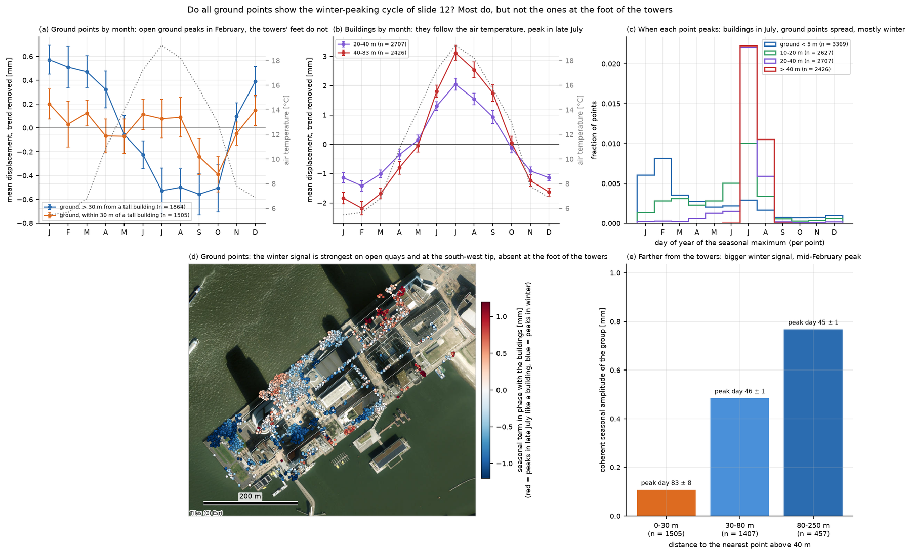
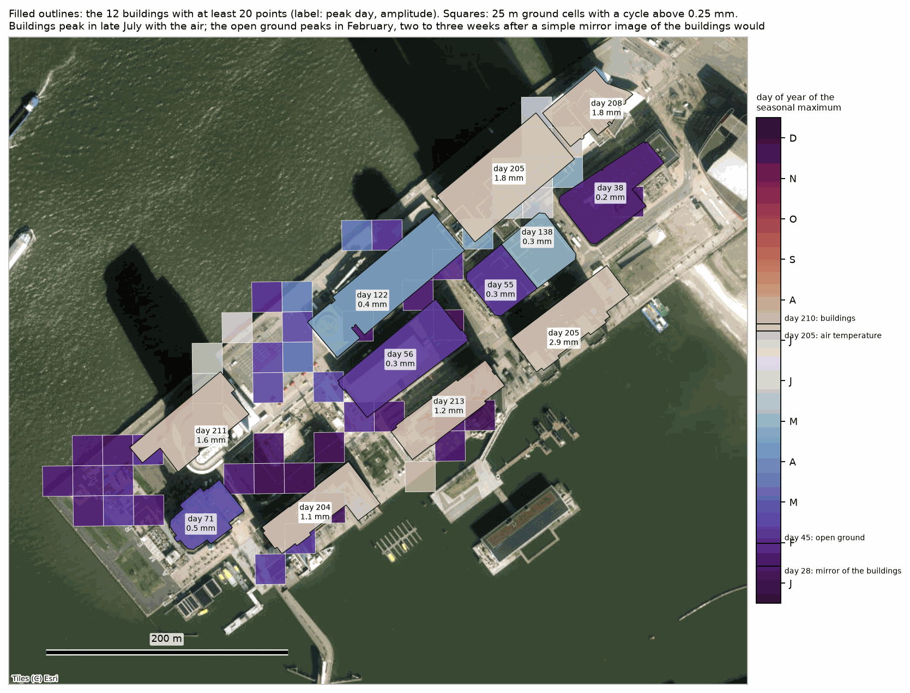
Where does the ground sink? In areas, not scattered. The quartiles of the ground rate are −3.6, −1.2 and −0.6 mm per year; the south-west tip around Hotel New York is stable, the middle of the pier sinks at 1 to 3.5 mm a year, the north-east end around De Rotterdam and the 2017 tower at 6 to 7. The pattern is spatial, and next to every building the pavement sinks at 2.5 to 4 mm a year whatever the building's age.
Why is the north-east end the fastest? It is the youngest fill and it carries the newest and heaviest towers, so consolidation under load is the reading that assumes the least; that the pavement drops faster than the piled towers beside it fits. What we cannot rule out from these data is a slow gradient in the reference network across the pier, which would look the same. What would settle it: levelling or groundwater records for the quay, and knowing where the reference point sits.
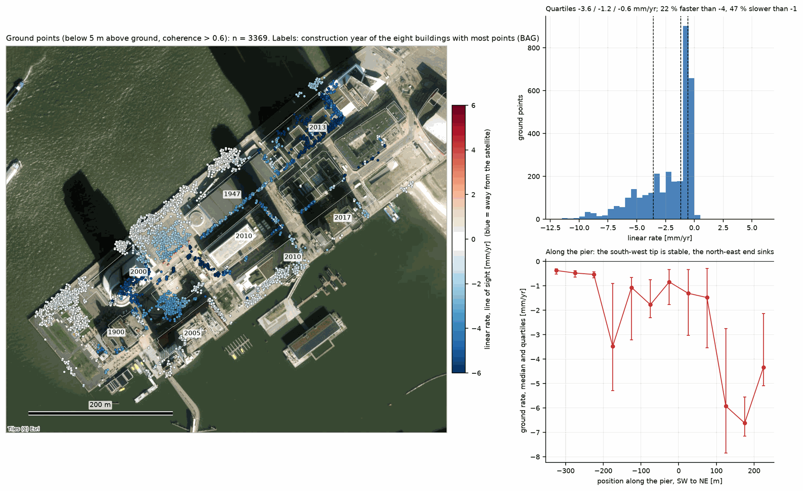
The buildings
Building by building, joined to the outlines of the national register. The newer the tower, the faster it still sinks and the more it is slowing down: −0.9, −1.2, −2.3, −3.8 and −3.7 mm per year for the towers of 2000, 2005, 2010, 2013 and 2017, with curvatures rising from +0.02 to +0.24 mm per year squared. Hotel New York, from 1900, has stopped: 196 points at −0.6 mm per year with no curvature, while the pavement around it sinks at −2.5. So it is the ground, not the roads: only the two newest towers sink about as fast as their surroundings. Within a building the rate changes with height, by −0.7 to −4.9 mm per 100 m per year, largest for the youngest concrete; shrinkage is the plausible reading, and a processing effect the alternative.
Settling piles or shrinking concrete? The two newest towers sink about as fast as their surroundings and slow down, which reads as consolidation under load; the tilt on top of it, largest for the youngest concrete, reads as shrinkage. A height-dependent error in the processing would read the same way. What would settle it: how the point heights were estimated and whether an atmospheric filter was applied before the velocities were fitted.
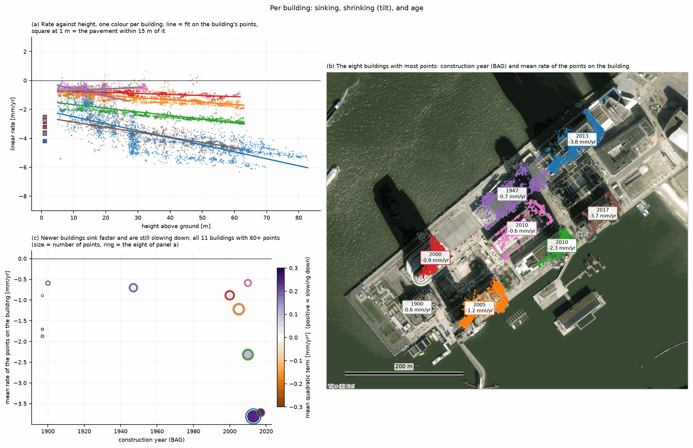
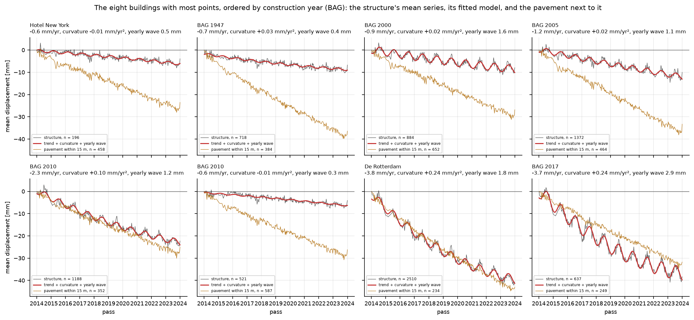
Do the buildings expand sideways too? Seen from the east-south-east, the satellite sees 0.385 of any eastward motion, so a structure that expands about a fixed point should show a seasonal term that grows with easting, at +0.015 mm per metre for a 4 K swing. Inside buildings it does, at +0.011 mm per metre, positive in 74 % of the 25 m windows and for all eight buildings with most points: about 70 % of free expansion. On the open ground the slopes have both signs. The ascending track would flip this term and nothing else, which makes it a clean test.
Is 70 % of free expansion the number to expect? A structure tied to its foundation and its neighbours should fall short of free expansion, but how far short is not something we can derive here, and the same shortfall would follow from a temperature swing smaller than the 4 K we assumed. The two readings make the same measurement. What would settle it: the ascending stack, on which this term changes sign while a vertical motion does not.
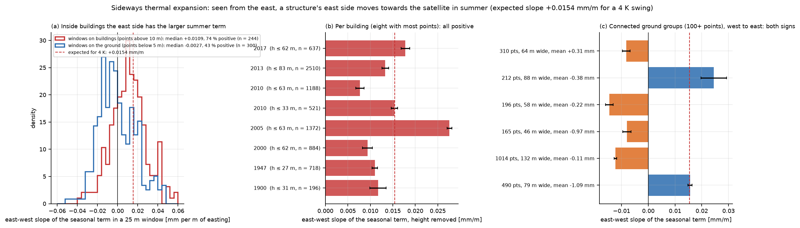
For the retrieval this means a nuisance model per building, rate = a + b·height and seasonal term = c + d·height + e·easting, and a lowest bin that carries an unknown seasonal term until the reference point is known.
The data itself
The first-look plots, for reference. What the data is and where it comes from is on data and method.
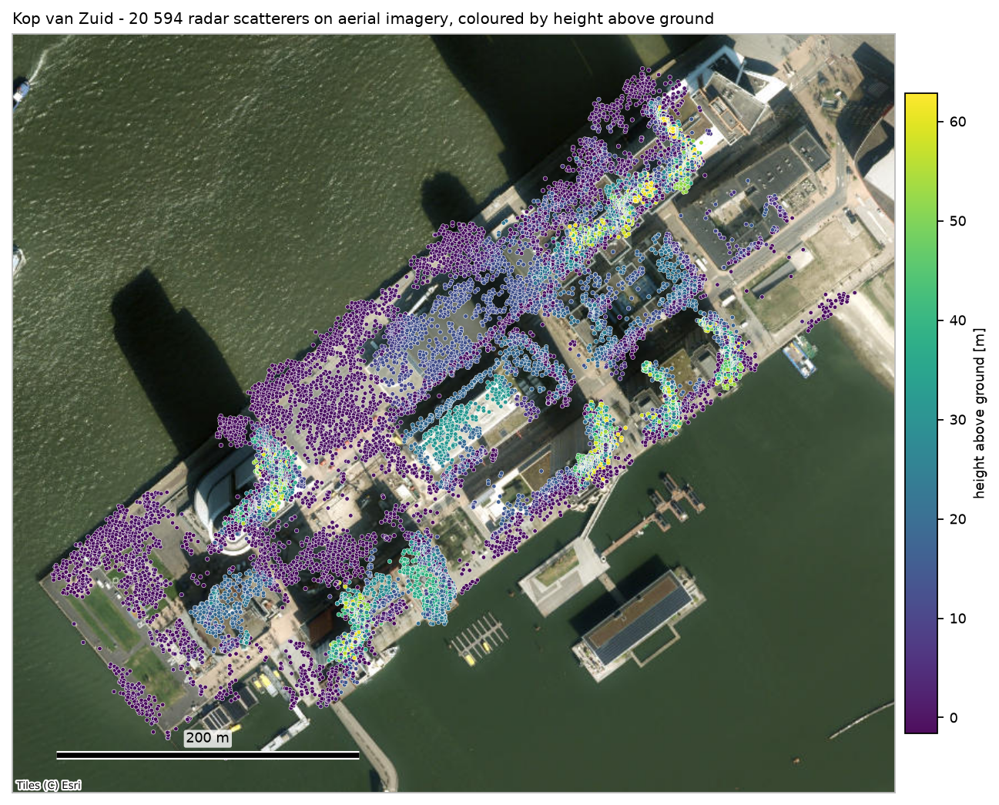
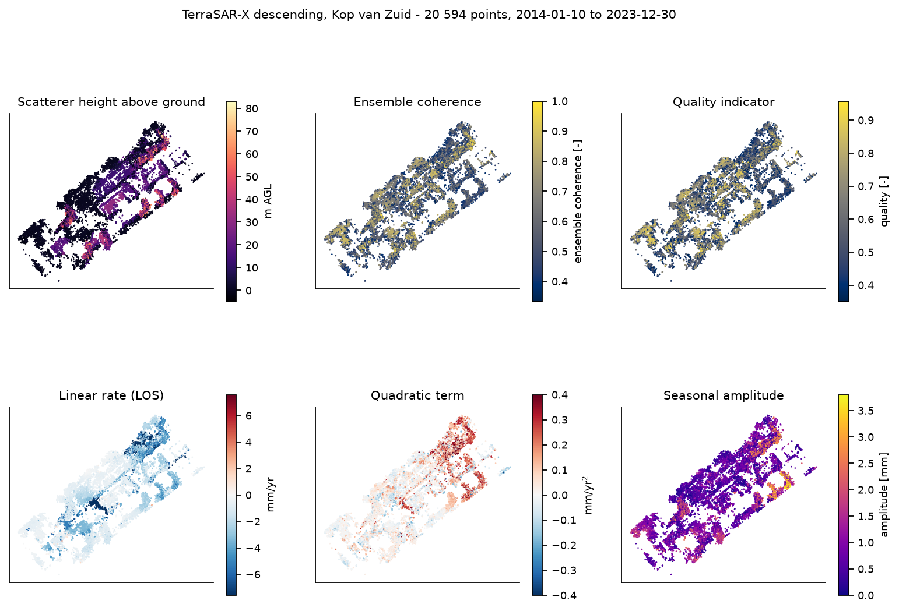
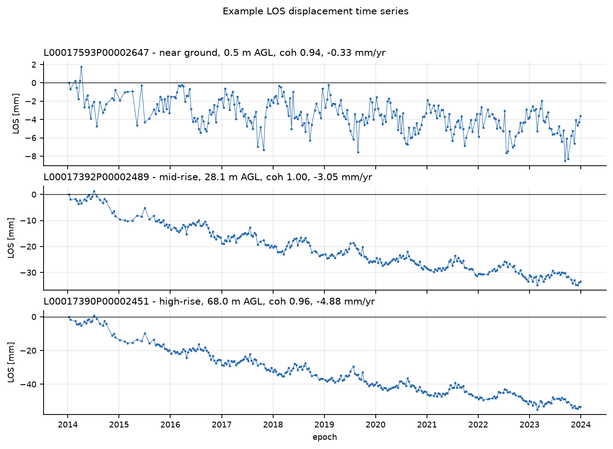
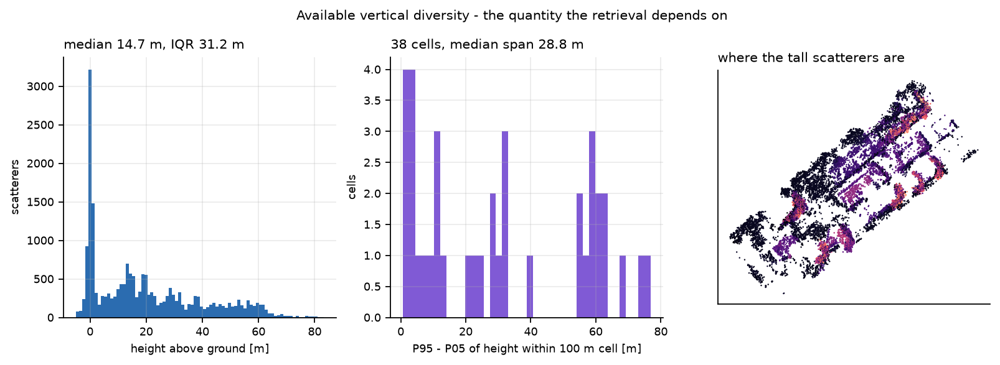